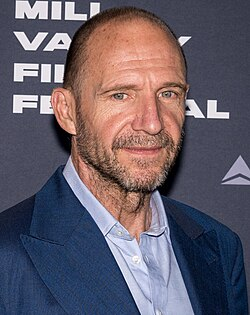
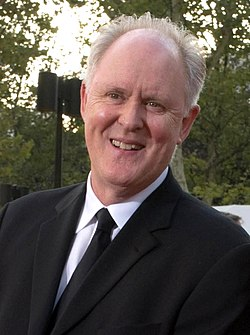
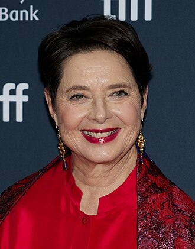
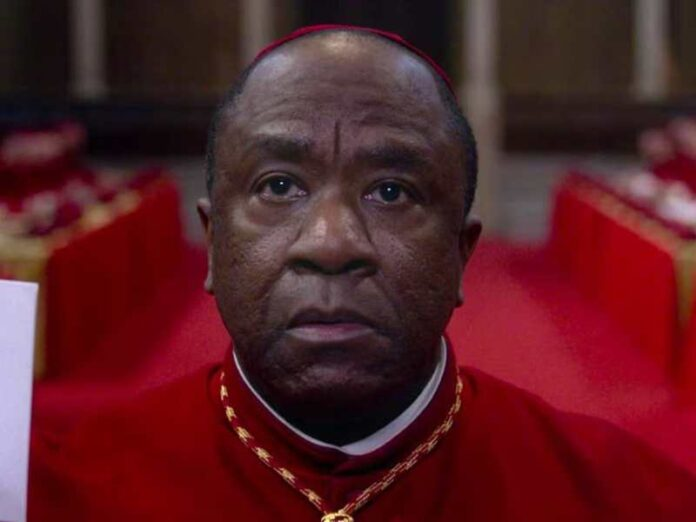
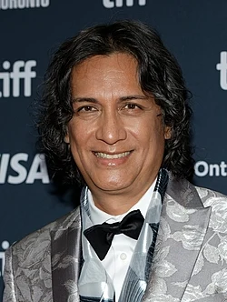
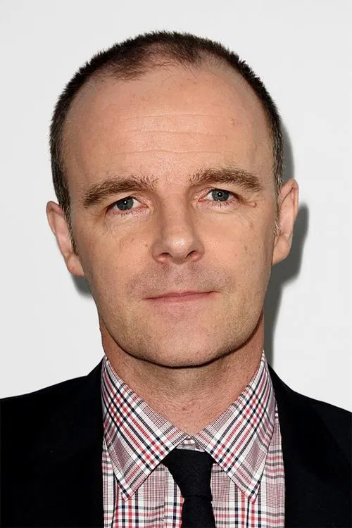
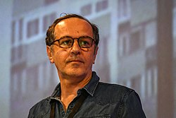
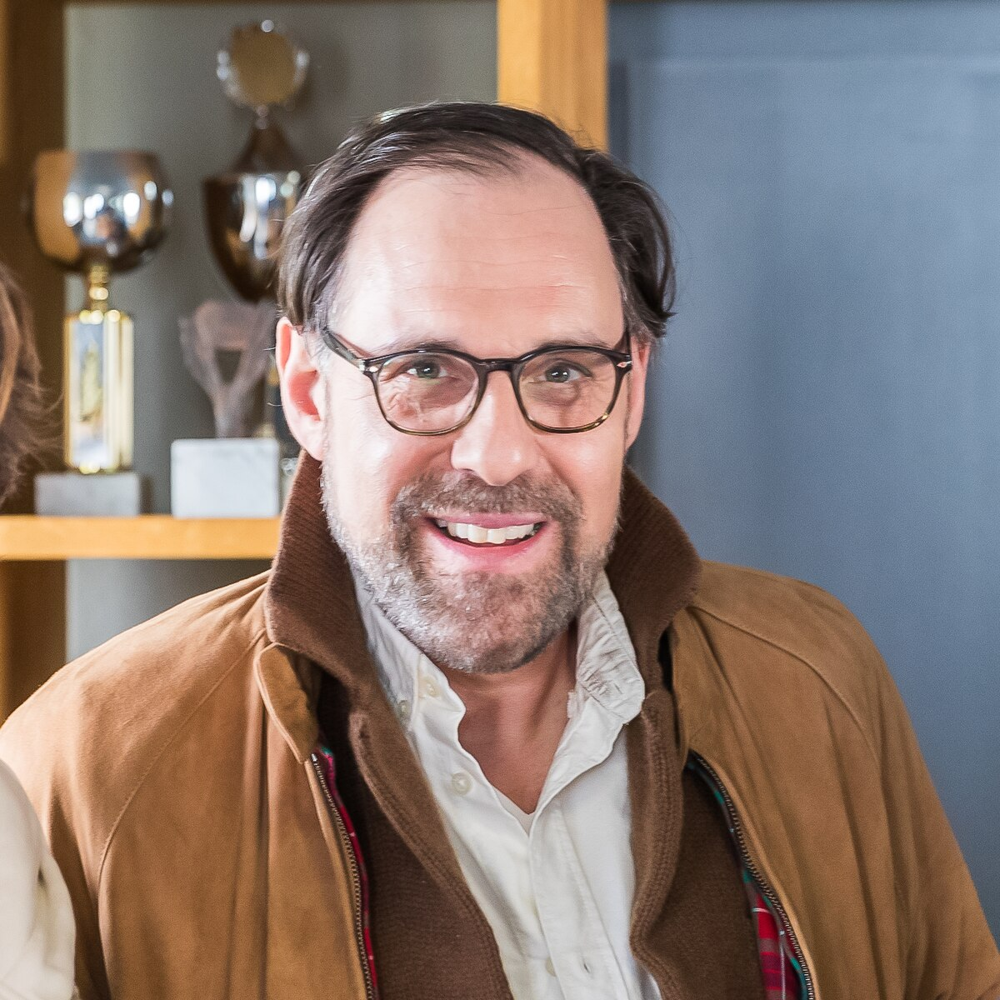
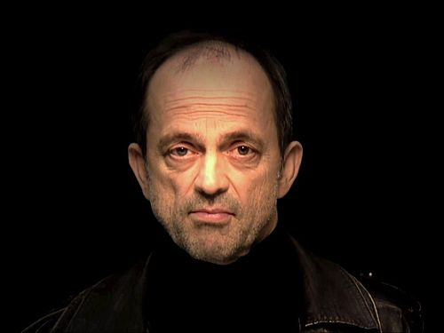

ELENCO
Elenco principal:
- Ralph Fiennes como el cardenal decano, Thomas Lawrence

- Stanley Tucci como el cardenal Aldo Bellini

- John Lithgow como el cardenal camarlengo, Joseph Tremblay

- Isabella Rossellini como la hermana Agnes

- Lucian Msamati como el cardenal Joshua Adeyemi

- Carlos Diehz como el cardenal Vincent Benítez

- Sergio Castellitto como el cardenal Goffredo Tedesco
recorte.jpg)
- Brían F. O'Byrne como monseñor Raymond O’Malley, asistente de Thomas Lawrence

- Merab Ninidze como el cardenal Sabbadin

- Thomas Loibl como el arzobispo Mandorff

- Jacek Koman como el arzobispo Janusz Woźniak
